DockerCon EU 2018 - Recap¶
Generally outline¶
From my perspective, there were a few red threads throughout the conference.
Security begins at the Developer¶
A shift left of security, bringing the responsibility of knowing your dependencies and their quality firmly to the developer. Most of this tooling is still aimed at enterprises though, being part of paid solutions mostly. At least that which was shown at the conference.
- docker-assemble, that can build in an image from a Maven pom.xml and will include meta-data of all your dependencies (transitive included)
- JFrog X-Ray
- Docker EE tooling such as Docker Trusted Registry (DTR)
Broader Automation¶
More focus on the entire lifecycle of a system and not just an application. It seems people are starting to understand that doing CI/CD and Infrastructure As Code is not a single event for a single application. There is likely to be a few applications belonging together making a whole system which will land on more than one type of infrastructure and possibly more types of clusters.
What we see is tools looking at either a broader scope, a higher level abstraction or more developer focussed (more love for the Dev in DevOps) to allow for easier integration with multiple platforms. For example, Pulumi will enable you to create any type of infrastructure - like Hashicorp's Terraform - but then in programming languages, you're used to (TypeScript, Python, Go).
- Pulumi
- Docker App
- CNAB
- Build-Kit
Containerization Influences Everything¶
Containerization has left deep and easy to spot imprints in our industry from startups building entirely on top of containers to programming languages changing their ways to stay relevant.
There are new monitoring kings in the world, DataDog, Sysdig, Honeycomb.io and so on. They live and breathe containers and are not afraid of being thrown around different public clouds, networks and what not. In contrast to traditional monitoring tools, which are often bolting on container support and struggle with the dynamic nature of containerized clusters.
Another extraordinary influence is that on the Java language. Declared dead a million times over and deemed obsolete in the container era due to its massive footprint in image size and runtime size. Both are being addressed, and we see a lot of work done on reducing footprint and static linking (JLink, Graal).
The most significant influence might be on the software behemoth that has rejuvenated itself. Microsoft has sworn allegiance to open source, Linux and containers. Windows 2019 server can run container workloads natively and work as nodes alongside a Docker EE cluster - which can include Kubernetes workloads. The next step would be support for Kubernetes integration, and as in the case of Java, smaller container footprint.
- Java & Docker
- Windows Container & Windows Server Support
- Observability tools
- Kubernetes offerings everywhere...
Docker Build with Build-Kit¶
Instead of investing in improving docker image building via the Docker Client, Docker created a new API and client library.
This library called BuildKit, is completely independent. With Docker 18.09, it is included in the Docker Client allowing anyone to use it as easily as the traditional docker image build.
BuildKit is already used by some other tools, such as Buildah and IMG, and allows you to create custom DSL "Frontends". As long as the API of BuikdKit is adhered to, the resulting image will be OCI compliant.
So further remarks below and how to use it.
- BuildKit
- In-Depth session Supercharged Docker Build with BuildKit
- Usable from Docker
18.09 - HighLights:
- allows custom DSL for specifying image (BuildKit) to still be used with Docker client/daemon
- build cache for your own files during build, think Go, Maven, Gradle...
- much more optimized, builds less, quicker, with more cache in less time
- support mounts (cache) such as secrets, during build phase
1 2 3 | # Set env variable to enable # Or configure docker's json config export DOCKER_BUILDKIT=1 |
1 2 3 4 5 6 7 8 9 10 11 12 13 14 15 16 17 18 19 20 21 22 23 | # syntax=docker/dockerfile:experimental ####################################### ## 1. BUILD JAR WITH MAVEN FROM maven:3.6-jdk-8 as BUILD WORKDIR /usr/src COPY . /usr/src ! RUN --mount=type=cache,target=/root/.m2/ mvn clean package -e ####################################### ## 2. BUILD NATIVE IMAGE WITH GRAAL FROM oracle/graalvm-ce:1.0.0-rc9 as NATIVE_BUILD WORKDIR /usr/src COPY --from=BUILD /usr/src/ /usr/src RUN ls -lath /usr/src/target/ COPY /docker-graal-build.sh /usr/src RUN ./docker-graal-build.sh RUN ls -lath ####################################### ## 3. BUILD DOCKER RUNTIME IMAGE FROM alpine:3.8 CMD ["jpc-graal"] COPY --from=NATIVE_BUILD /usr/src/jpc-graal /usr/local/bin/ RUN chmod +x /usr/local/bin/jpc-graal ####################################### |
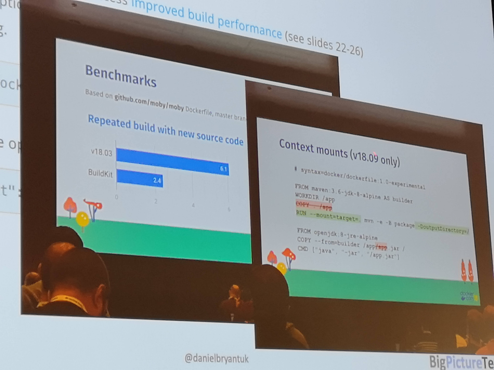
Secure your Kubernetes¶
- https://www.openpolicyagent.org + admission controller
- Network Policies
- Service Accounts
CNAB: cloud native application bundle¶
- Bundle.json
- invocation image (oci) = installer
- https://cnab.io
- docker app implements it
- helm support
- https://github.com/deislabs
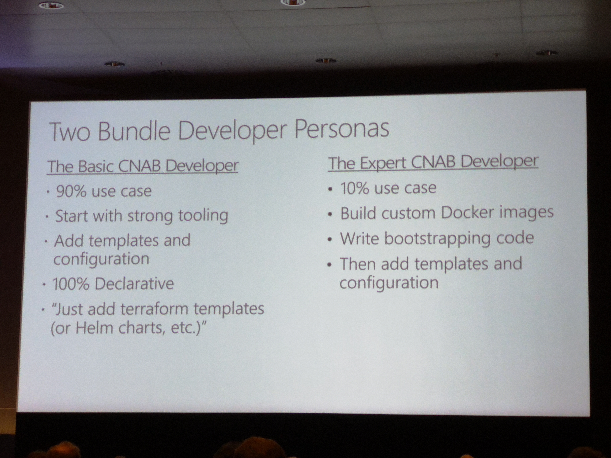
Multi-Cloud as Code¶
- Pulumi.io (typescript, python)
- install:
brew install pulumi - take over files from Pulumi's Jenkins Demo
- init stack
pulumi stack init demomon-pulumi-demo-1- connect to GitHub
- set kubernetes config
pulumi config set kubernetes:context gke_ps-dev-201405_europe-west4_joostvdg-reg-dec18-1 pulumi config set isMinikube falsenpm installpulumi config set username administratorpulumi config set password 3OvlgaockdnTsYRU5JAcgM1o --secretpulumi preview- incase pulumi loses your stack:
pulumi stack select demomon-pulumi-demo-1 pulumi destroy
1 2 3 4 5 6 7 8 9 10 11 12 13 14 15 16 17 18 19 | Type Name Status
+ pulumi:pulumi:Stack demomon-pulumi-demo-2-demomon-pulumi-demo-2 created
+ └─ kubernetes:helm.sh:Chart jenkins-pulumi created
+ ├─ kubernetes:core:ConfigMap jenkins-pulumi-tests created
+ ├─ kubernetes:core:ConfigMap jenkins-pulumi created
+ ├─ kubernetes:core:Secret jenkins-pulumi created
+ ├─ kubernetes:core:Service jenkins-pulumi-agent created
+ ├─ kubernetes:core:Service jenkins-pulumi created
+ ├─ kubernetes:core:PersistentVolumeClaim jenkins-pulumi created
+ ├─ kubernetes:extensions:Ingress jenkins-pulumi created
+ ├─ kubernetes:core:Pod jenkins-pulumi-ui-test-j2dtf created
+ └─ kubernetes:apps:Deployment jenkins-pulumi created
Resources:
+ 11 created
Duration: 1m39s
Permalink: https://app.pulumi.com/joostvdg/demomon-pulumi-demo-2/updates/4
|
JFrog Jenkins Challenge¶
Visited the stand of JFrog where they had stories about two main products: Artifactory and X-Ray.
For both there is a Challenge, an X-Ray Challenge and a Jenkins & Artifactory Challenge.
Jenkins Challenge¶
The instructions for the Challenge were simply, follow what is stated in their GitHub repository and email a screenshot of the result.
The instruction were as follows:
- Get an Artifactory instance (you can start a free trial on prem or in the cloud)
- Install Jenkins
- Install Artifactory Jenkins Plugin
- Add Artifactory credentials to Jenkins Credentials
- Create a new pipeline job
- Use the Artifactory Plugin DSL documentation to complete the following script:
With a Scripted Pipeline as starting point:
1 2 3 4 5 6 7 8 9 10 11 12 13 14 15 16 17 18 19 20 21 | node { def rtServer def rtGradle def buildInfo stage('Preparation') { git 'https://github.com/jbaruch/gradle-example.git' // create a new Artifactory server using the credentials defined in Jenkins // create a new Gradle build // set the resolver to the Gradle build to resolve from Artifactory // set the deployer to the Gradle build to deploy to Artifactory // declare that your gradle script does not use Artifactory plugin // declare that your gradle script uses Gradle wrapper } stage('Build') { //run the artifactoryPublish gradle task and collect the build info } stage('Publish Build Info') { //collect the environment variables to build info //publish the build info } } |
I don't like scripted, so I opted for Declarative with Jenkins in Kubernetes with the Jenkins Kubernetes plugin.
Steps I took:
- get a trial license from the JFrog website
- install Artifactory
- and copy in the license when prompted
- change admin password
- create local maven repo 'libs-snapshot-local'
- create remote maven repo 'jcenter' (default remote value is jcenter, so only have to set the name)
- install Jenkins
- Artifactory plugin
- Kubernetes plugin
- add Artifactory username/password as credential in Jenkins
- create a gradle application (Spring boot via start.spring.io) which you can find here
- create a Jenkinsfile
Installing Artifactory¶
I installed Artifactory via Helm. JFrog has their own Helm repository - of course, would weird otherwise tbh - and you have to add that first.
1 2 | helm repo add jfrog https://charts.jfrog.io helm install --name artifactory stable/artifactory |
Jenkinsfile¶
This uses the Gradle wrapper - as per instructions in the challenge.
So we can use the standard JNLP container, which is default, so agent any will do.
1 2 3 4 5 6 7 8 9 10 11 12 13 14 15 16 17 18 19 20 21 22 23 24 25 26 27 28 29 30 31 32 33 34 35 36 37 38 39 40 41 42 43 44 45 46 47 48 49 50 51 52 53 54 55 56 57 58 59 60 61 62 63 64 65 66 | pipeline { agent any environment { rtServer = '' rtGradle = '' buildInfo = '' artifactoryServerAddress = 'http://..../artifactory' } stages { stage('Test Container') { steps { container('gradle') { sh 'which gradle' sh 'uname -a' sh 'gradle -version' } } } stage('Checkout'){ steps { git 'https://github.com/demomon/gradle-jenkins-challenge.git' } } stage('Preparation') { steps { script{ // create a new Artifactory server using the credentials defined in Jenkins rtServer = Artifactory.newServer url: artifactoryServerAddress, credentialsId: 'art-admin' // create a new Gradle build rtGradle = Artifactory.newGradleBuild() // set the resolver to the Gradle build to resolve from Artifactory rtGradle.resolver repo:'jcenter', server: rtServer // set the deployer to the Gradle build to deploy to Artifactory rtGradle.deployer repo:'libs-snapshot-local', server: rtServer // declare that your gradle script does not use Artifactory plugin rtGradle.usesPlugin = false // declare that your gradle script uses Gradle wrapper rtGradle.useWrapper = true } } } stage('Build') { steps { script { //run the artifactoryPublish gradle task and collect the build info buildInfo = rtGradle.run buildFile: 'build.gradle', tasks: 'clean build artifactoryPublish' } } } stage('Publish Build Info') { steps { script { //collect the environment variables to build info buildInfo.env.capture = true //publish the build info rtServer.publishBuildInfo buildInfo } } } } } |
Jenkinsfile without Gradle Wrapper¶
I'd rather not install the Gradle tool if I can just use a pre-build container with it.
Unfortunately, to use it correctly with the Artifactory plugin and a Jenkins Kubernetes plugin, we need to do two things.
- create a
GradleTool in the Jenkins master- because the Artifactory plugin expects a
Jenkins Toolobject, not a location - Manage Jenkins -> Global Tool Configuration -> Gradle -> Add
- As value supply
/usr, the Artifactory build will add/gradle/binto it automatically
- because the Artifactory plugin expects a
- set the user of build Pod to id
1000explicitly- else the build will not be allowed to touch files in
/home/jenkins/workspace
- else the build will not be allowed to touch files in
1 2 3 4 5 6 7 8 9 10 11 12 13 14 15 16 17 18 19 20 21 22 23 24 25 26 27 28 29 30 31 32 33 34 35 36 37 38 39 40 41 42 43 44 45 46 47 48 49 50 51 52 53 54 55 56 57 58 59 60 61 62 63 64 65 66 67 68 69 70 71 72 73 74 75 76 77 78 79 80 81 82 83 | pipeline { agent { kubernetes { label 'mypod' yaml """apiVersion: v1 kind: Pod spec: securityContext: runAsUser: 1000 fsGroup: 1000 containers: - name: gradle image: gradle:4.10-jdk-alpine command: ['cat'] tty: true """ } } environment { rtServer = '' rtGradle = '' buildInfo = '' CONTAINER_GRADLE_TOOL = '/usr/bin/gradle' } stages { stage('Test Container') { steps { container('gradle') { sh 'which gradle' sh 'uname -a' sh 'gradle -version' } } } stage('Checkout'){ steps { // git 'https://github.com/demomon/gradle-jenkins-challenge.git' checkout scm } } stage('Preparation') { steps { script{ // create a new Artifactory server using the credentials defined in Jenkins rtServer = Artifactory.newServer url: 'http://35.204.238.14/artifactory', credentialsId: 'art-admin' // create a new Gradle build rtGradle = Artifactory.newGradleBuild() // set the resolver to the Gradle build to resolve from Artifactory rtGradle.resolver repo:'jcenter', server: rtServer // set the deployer to the Gradle build to deploy to Artifactory rtGradle.deployer repo:'libs-snapshot-local', server: rtServer // declare that your gradle script does not use Artifactory plugin rtGradle.usesPlugin = false // declare that your gradle script uses Gradle wrapper rtGradle.useWrapper = true } } } stage('Build') { //run the artifactoryPublish gradle task and collect the build info steps { script { buildInfo = rtGradle.run buildFile: 'build.gradle', tasks: 'clean build artifactoryPublish' } } } stage('Publish Build Info') { //collect the environment variables to build info //publish the build info steps { script { buildInfo.env.capture = true rtServer.publishBuildInfo buildInfo } } } } } |
Docker security & standards¶
- security takes place in every layer/lifecycle phase
- for scaling, security needs to be part of developer's day-to-day
- as everything is code, anything part of the sdlc should be secure and auditable
- use an admission controller
- network policies
- automate your security processes
- expand your security automation by adding learnings
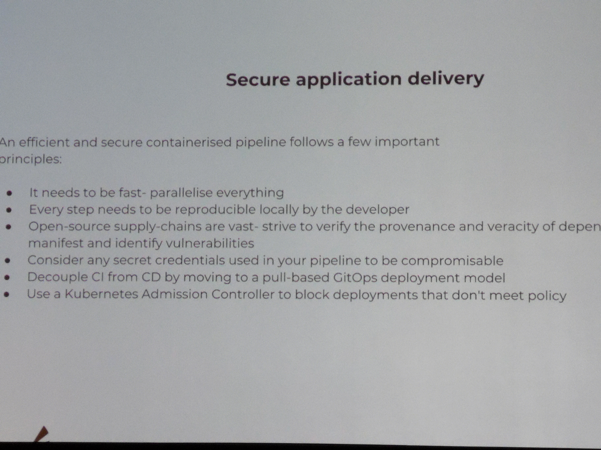
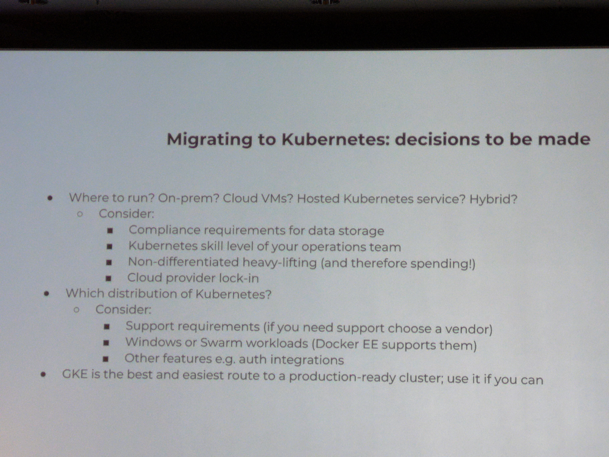
Docker & Java & CICD¶
- telepresence
- Distroless (google mini os)
- OpenJ9
- Portala (for jdk 12)
- wagoodman/dive
- use jre for the runtime instead of jdk
- buildkit can use mounttarget for local caches
- add labels with Metadata (depency trees)
- grafeas & kritis
- FindSecBugs
- org.owasp:dependency-check-maven
- arminc/clair-scanner
- jlink = in limbo
Docker & Windows¶
- specific base images for different use cases
- Docker capabilities heavily depend on Windows Server version
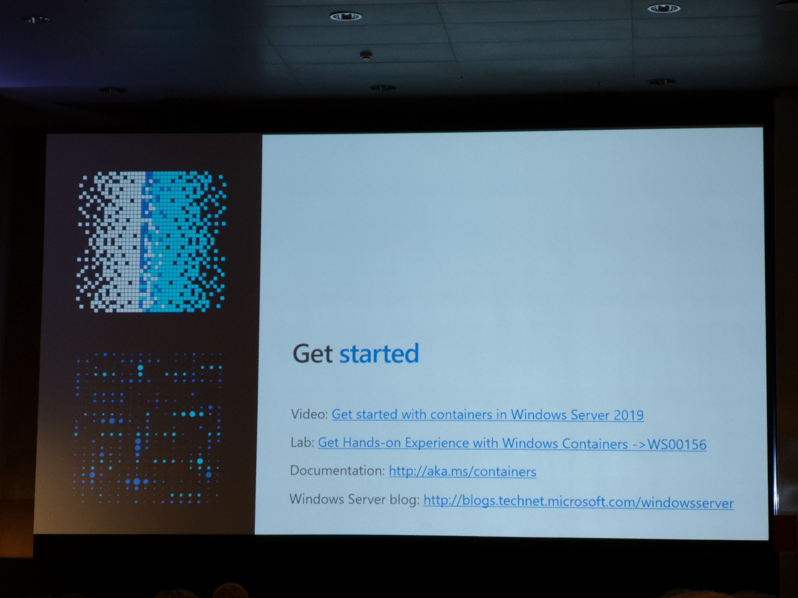
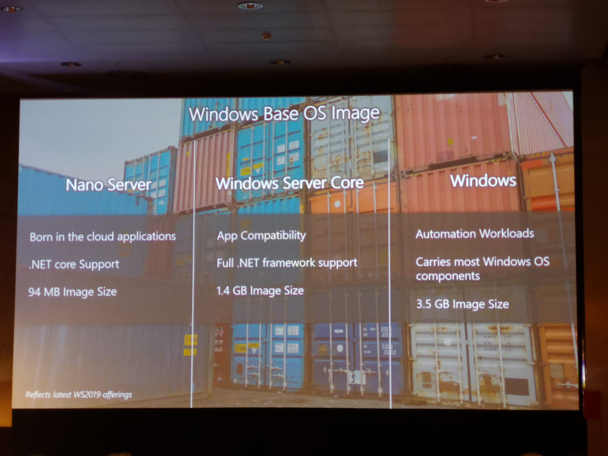
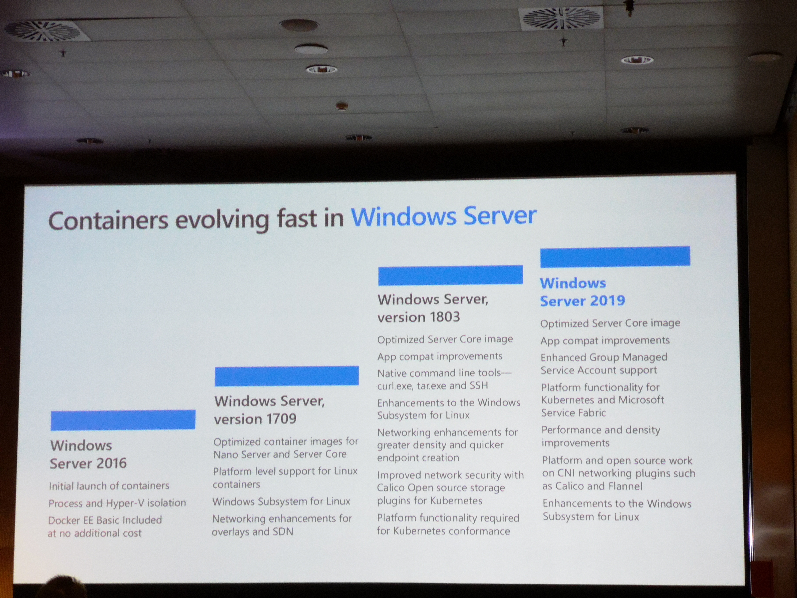
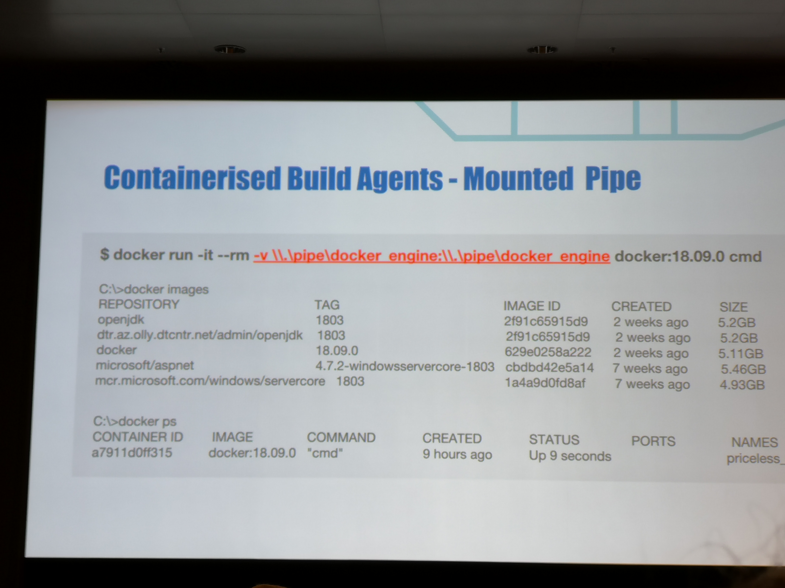
Other¶
Docker pipeline¶
- Dind + privileged
- mount socket
- windows & linux
- Windows build agent provisioning with docker EE & Jenkins
- Docker swarm update_config
Idea: build a dynamic ci/cd platform with kubernetes¶
- jenkins evergreen + jcasc
- kubernetes plugin
- gitops pipeline
- AKS + virtual kubelet + ACI
- Jenkins + EC2 Pluging + ECS/Fargate
- jenkins agent as ecs task (fargate agent)
- docker on windows, only on ECS
Apply Diplomacy to Code Review¶
- apply diplomacy to code review
- always positive
- remove human resistantance with inclusive language
- improvement focused
- persist, kindly
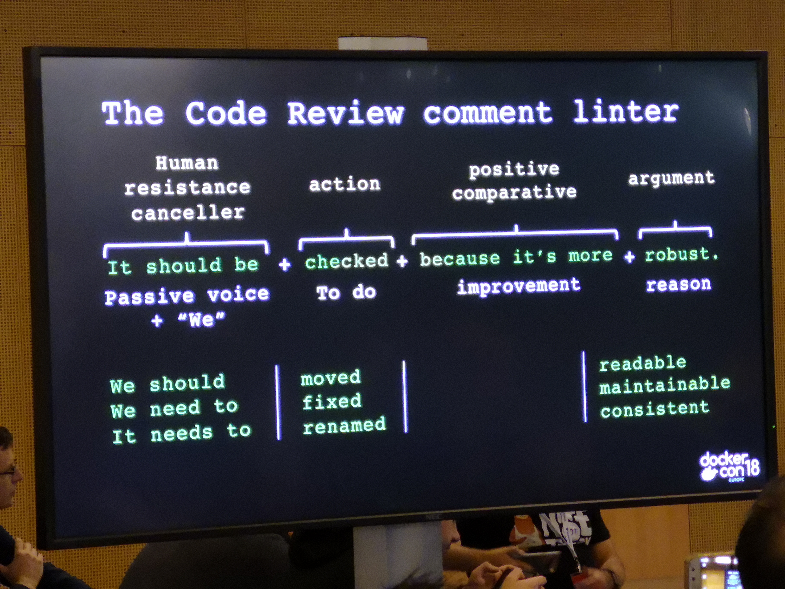
Citizens Bank journey¶
- started with swarm, grew towards kubernetes (ucp)
- elk stack, centralised operations cluster
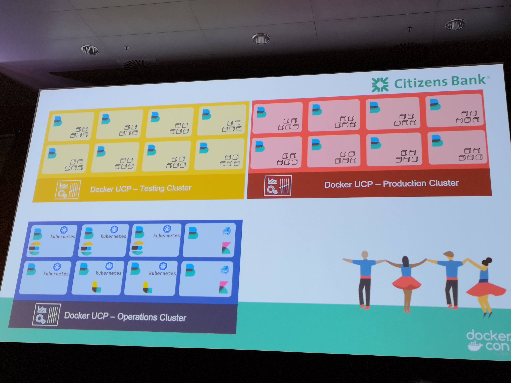
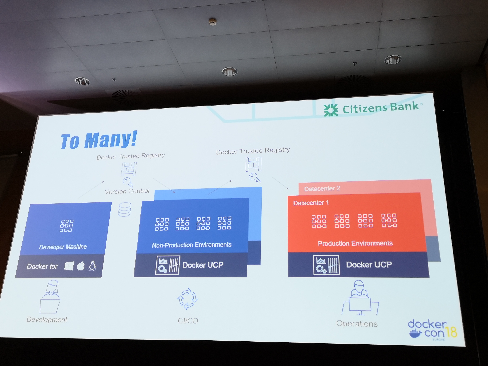
Docker EE - Assemble¶
Docker EE now has a binary called docker-assemble.
This allows you to build a Docker image directly from something like a pom.xml, much like JIB.
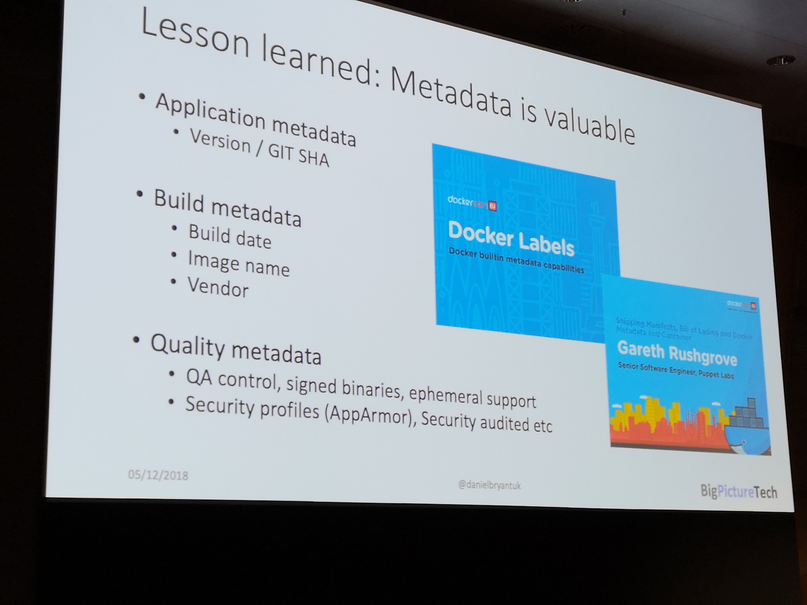
Other¶
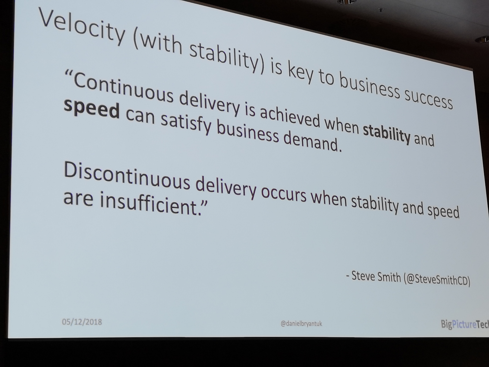